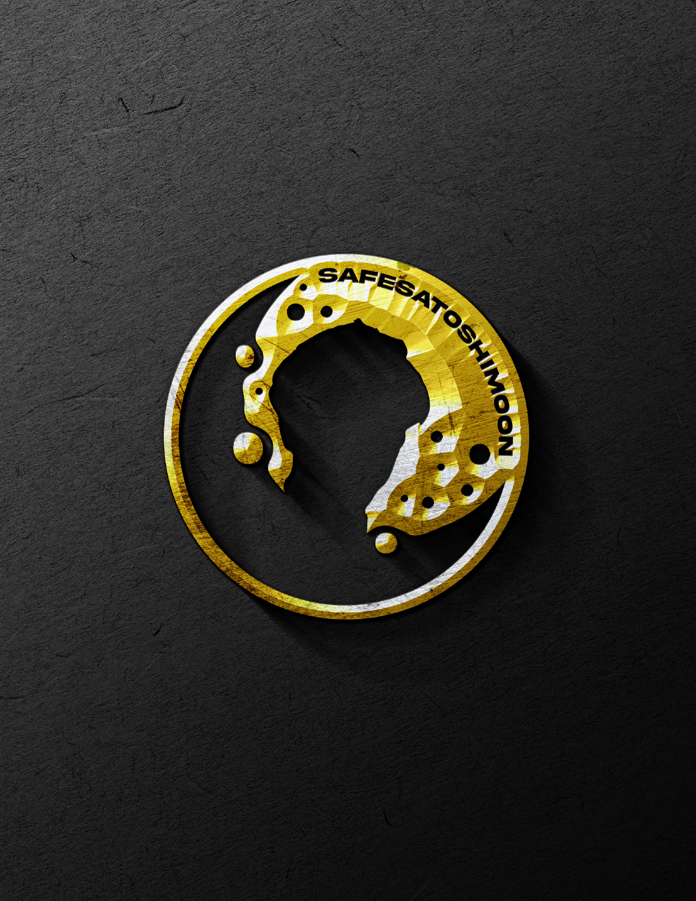
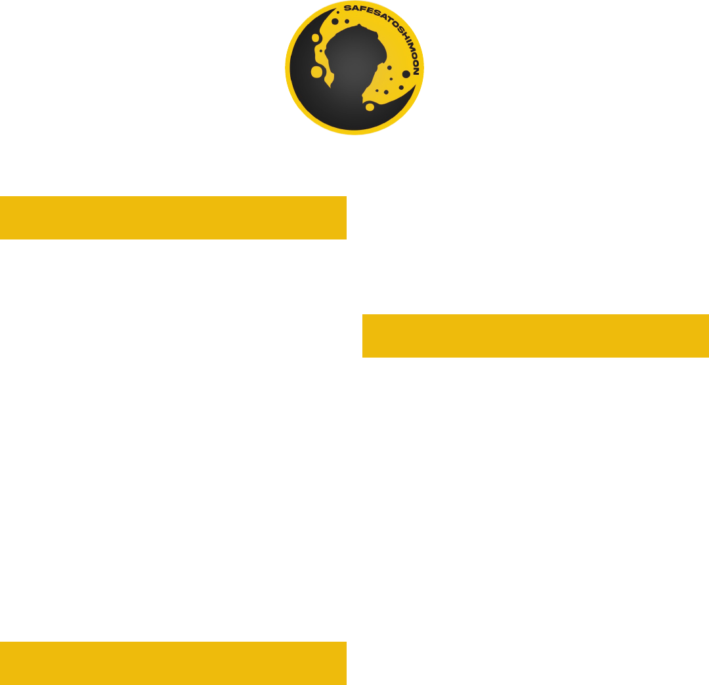

WHITEPAPER

ABSTRACT
We are entering a digital revolution
across the world spanning from social
media to the workplace and now, to
currencies. Cryptocurrency is gaining
in popularity at an astonishing rate for
quite a few reasons, including scarcity,
divisibility, utility, transportability,
durability, and counterfeitability.
The distribution of wealth is
being shifted from the hands
of Wall Street to smaller crypto
communities.
There is now another version of
cryptocurrency that is gaining
popularity: Tokens. Tokens are
created on existing blockchains. In
our case we use Binance Smart Chain,
which can create new ways to gain
access to promising opportunities in
a permissionless fashion.
2
TOKENOMICS
One reason why Tokens are gaining
popularity is because of the scarcity
factor, or Tokenomics.
“The networks reward
validators, or miners, with
newly minted coins; others sell
a portion of the token supply to
prospective users in an initial
coin oering.”
In our case, the supply started with
1,000,000,000,000,000, but 50%
was burned by the developer on
roll out day. As time progresses,
SafeSatoshiMoon tokens will continue
to be burned at a rate of 10% per
transaction. 3% of each transaction
is redistributed among holders as a
reward for holding. The other 7% will
be auto locked in a Pancake Swap
Liquidity Pool. With this process in
place, a scarcity factor is created as
tokens burn.
VALUES
Our goal as a token will always be
about the community, because that’s
how we started: by coming together
and creating a token for the people.
Unknowingly, we have become
a place of solace for those that
have been scammed or rugged
in the past. Most crypto coins
can make you money, but only
SafeSatoshiMoon will make
you stay for the common bond
we all share.
The community will be engaged in
parts of the process as we continue
to progress as a new token. Input and
suggestions will always be helpful
and we look forward to growing
collectively with the community.
3

USE CASES
The use cases for SafeSatoshiMoon
can be described as follows:
1. Charity
a. The SSM team will make an initial
donation to the charity wallet. As time
progresses, the wallet will receive
burned tokens. Community members
will also be allowed to donate to the
charity wallet.
b. Extra tokens that are collected will
be used for charitable donations that
will be voted on by the community
of holders that are engaged with our
social media platforms.
c. These donations will be announced
via social media and presented to the
charitable cause via the blockchain.
The transactions on the block chain
(Smart Contract) will be available
publicly for investors.
4
2. NFT Exchange (Non-Fungible
Token)
a. “According to Binance Academy,
an NFT is a type of cryptographic
token on a blockchain that represents
a unique asset”. For example, if
you trade one Bitcoin, the receiver
will receive one Bitcoin of the same
value. With an NFT, “each token
has a unique identier that makes
it dierent from other units, making
it useful for assets such as proof of
authenticity and ownership within the
digital realm.” When this is applied,
artists, for example, are able to create
and sell their own work over the NFT
Exchange.
b. There are two ways to interact
with an NFT exchange, over Binance
Chain and Trust Wallet. We intend
to leverage this option as we pursue
our own NFT exchange and source a
reputable developer for the project.

ROADMAP
Q2 2021
• Start community by opening
up several social media ows
including, but not limited to,
Discord, Telegram, Twitter, Reddit,
and Instagram.
• Create brand, logo, website and
advertisements through social
media and Youtube reviews.
• Apply for CoinGecko,
CoinMarketCap, BSCscan.com,
and Trust Wallet.
• Initial push to organize the
charitable donation workow.
• Contract audited by a third party.
Q3 2021
• Apply for WhiteBit and BitMart
exchanges to grow our
community reach.
• Community submission and
voting on charities we will donate
to, followed by making our rst
donation.
5
• Gain a large following on social
media platforms to become one
of the top communities in the De
Token space.
• Initial push to create community
merchandise
Q4 2021
• Source reputable developer for
NFT marketplace.
• Create a valid smart contract for
our marketplace.
• Have NFT listed as an exchange
on the Binance Smart Chain.
• Continue to look towards other
exchanges including but not
limited to Binance and Coinbase.

Disclaimer: Investing in the value
of any one cryptocurrency involves
risk due to several factors. These
risks should be understood by the
investor. The information provided
on this website does not constitute
investment advice or investment
recommendations nor does it
constitute an oer to buy or sell or a
solicitation of an oer to buy or sell
any cryptocurrency. This information
should not be used as a substitute for
suitable investment. Please conduct
your own due diligence and consult
your nancial advisor or independent
professional advisor before making
any investment decisions.
6